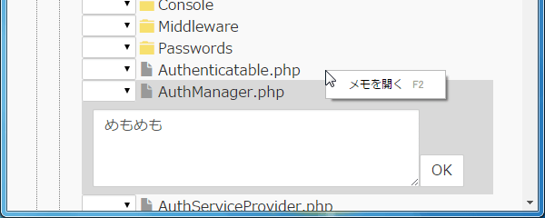

SourceR（ソーサー）は巨大なフレームワーク・ライブラリ・オープンソースなどのソースリーディングを助けるソフトウェアです。
読み終わったファイル・メソッドにタグをつけたり、メモを書くことで膨大なファイル・巨大なクラスのリーディングを管理します。
ダウンロード v1.0 2015/08/29
動作環境は Windows/Linux/Mac です。
ソースのルートフォルダーをドラッグ＆ドロップするとメソッド単位のツリーが表示されます。
対応言語は Exuberant Ctags に準じます。また、言語に対応していなくてもファイル単位のツリーを表示したり、タグをつけることは可能です。
読み終わったメソッド・ファイル・フォルダーにタグをつけることができます。
それぞれのタグの意味は以下のようなものを想定しています。
つけたタグに応じて進捗をグラフィカルに確認できます。
メソッド・ファイル・フォルダー単位でメモを書くことができます。

タグやメモの有無でフィルターをかけることができます。
メニューに記載のないキーボード操作の一覧です。
| ツリーの移動・開閉 | ↑ ↓ ← → |
| OK, NG, Skip タグをトグル | O, N, S |
| フォーカスを外す | Esc |